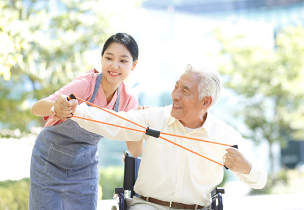
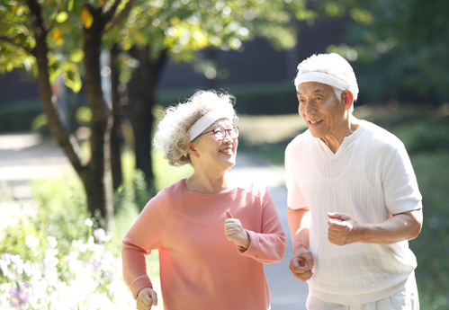
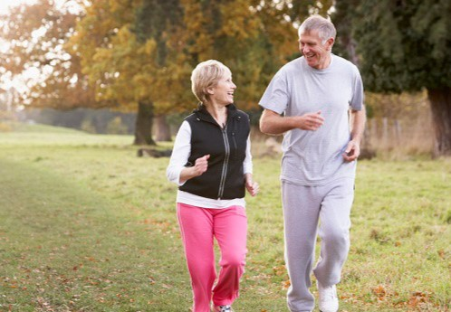
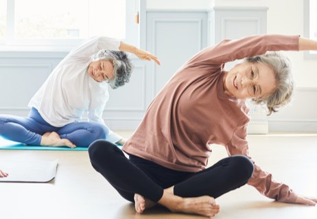
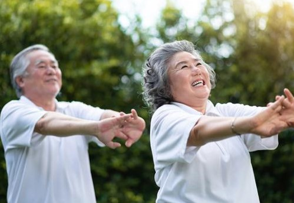

일상 생활에서의 상체 운동

저항 밴드 운동
등 근육과 팔 근육을 강화시키기 위한 운동으로서 밴드를 당길 때는 팔꿈치를 구부리지 않도록 주의합니다.
- 1. 저항 밴드를 이용해 팔을 앞으로 뻗습니다.
- 2. 양손으로 잡고 천천히 옆으로 당깁니다.
어깨 올리기
어깨 근육을 풀어주고, 긴장을 완화시켜 주는 운동입니다.
- 1. 의자에 앉거나 섭니다.
- 2. 양쪽 어깨를 귀 쪽으로 천천히 들어올립니다.
- 3. 올린 어깨를 다시 허벅지 옆으로 내립니다.
- 4. 이 동작을 10회 이상 반복합니다.
일상 생활에서의 하체 운동


걷기
전반적인 하체 근력을 강화하고, 심혈관 건강을 증진시킬 수 있는 운동입니다.
- 1. 시선은 정면을 향하게 하고, 머리와 목은 곧게 세웁니다.
- 2. 어깨는 편안하게 내리고, 팔은 자연스럽게 앞뒤로 흔듭니다.
- 3. 등을 곧게 펴고, 허리를 곧게 유지합니다.
- 4. 보폭은 너무 넓지 않게, 발뒤꿈치부터 발가락 순으로 착지합니다.
스쿼트
허벅지와 엉덩이 근육을 강화하고, 일상생활에서 일어서고 앉는 동작을 쉽게 할 수 있도록 도와주는 중요한 하체 운동입니다.
- 1. 의자 앞에 똑바로 서서, 발은 어깨 너비로 벌립니다.
- 2. 발끝은 약간 바깥쪽을 향하게 합니다. 등은 곧게 펴고, 시선은 정면을 향합니다.
- 3. 등은 곧게 펴고, 시선은 정면을 향합니다.
- 4. 천천히 엉덩이를 뒤로 빼면서 무릎을 구부립니다.
- 5. 상체는 약간 앞으로 기울여 균형을 잡으면서 등은 계속 곧게 유지합니다.
- 6. 엉덩이가 의자에 거의 닿을 때까지 천천히 내려갑니다.
- 7. 다시 천천히 올라오면서 무릎을 약간 굽힌 상태로 유지합니다.
일상 생활에서의 코어 운동


다리 뻗기 운동
허벅지와 복부 근육을 강화하고, 다리 근육을 늘려 주는 운동입니다.
- 1. 의자에 앉아 한쪽 다리를 앞으로 쭉 뻗습니다.
- 2. 뻗은 다리를 다시 천천히 내립니다.
- 3. 반대쪽 다리도 같은 방법으로 반복합니다.
상체 돌리기
복부와 허리 근육을 강화하고, 척추의 유연성을 높여 주는 운동입니다.
- 1. 의자에 앉아 허리를 핍니다.
- 2. 양손을 가슴 앞에서 깍지 끼세요.
- 3. 상체를 천천히 왼쪽으로 돌렸다가 다시 중앙으로 돌아옵니다.
- 4. 오른쪽으로 돌리는 동작을 반복합니다.